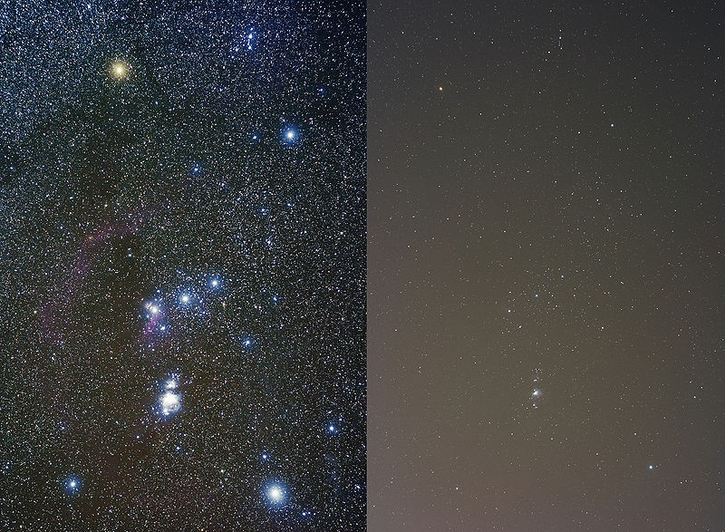

Bevor uns Licht aus dem Weltraum erreicht, muss es erst die Atmosphäre durchqueren. Dabei wird es etwas abgeschwächt – was zwar ärgerlich ist, aber nicht weiter stört – und leicht abgelenkt. Da sich die Luft über uns bewegt, ändert sich diese Ablenkung ständig. So entsteht der Eindruck, dass Sterne leicht wackeln und größere Flächen wie Planeten unscharf werden. Dieses Phänomen nennt man Seeing. Man kann das Seeing schon mit bloßem Auge bemerken: Sterne „funkeln“.
Für Astronomen ist das ein großes Problem: Egal, wie groß ein Teleskop ist und egal, wie genau der Spiegel geschliffen ist, Bilder werden nie wirklich scharf. Im Laufe der Zeit haben sich Astronomen verschiedene Methoden ausgedacht, um das Problem zu lösen. Wenn uns die Atmosphäre stört, dann bauen wir unser Teleskop einfach darüber! So entstand die Idee für das Hubble Teleskop. Es fliegt in 560 km Höhe um die Erde und macht tatsächlich unglaublich scharfe (und schöne) Bilder. Die meisten Astronomiefotos, die man im Internet findet, sind von Hubble.
Ein anderer Ansatz, der bei sehr großen Teleskopen auf der Erde verwendet wird, ist die „Adaptive Optik“. Während man fotografiert, analysiert ein Computer ständig das Bild und versucht herauszufinden, wie man den Spiegel des Teleskops verbiegen muss, um das Seeing auszugleichen. Kleine Kolben unterhalb des Spiegels führen das dann aus.
Für uns kommt natürlich beides nicht in Frage. Adaptive Optik ist viel zu kompliziert und einen Satelliten können wir schon gar nicht in die Umlaufbahn bringen. Es gibt aber einen Trick, wie man das Seeing mit einfachen Mitteln austricksen kann. Anstatt nur ein Bild zu machen, nehmen wir gleich ganz viele, ein ganzes Video auf. Wenn wir Glück haben, ist immer wieder eines dabei, bei dem sich die Verzerrung von zwei Luftschichten gerade ausgleicht, oder bei dem das ganze Bild gleichmäßig in eine Richtung verschoben ist. Diese Bilder sammeln wir, zentrieren unser Motiv, und mitteln die Bilder. Den Großteil dieser Arbeit kann man zum Glück dem Computer überlassen, wir verwenden dazu das Programm Giotto.
Videoastronomie eignet sich aber nicht dazu, alle astronomischen Objekte zu fotografieren, sonst hätte sich ja auch niemand die Mühe gemacht, Teleskope im Weltall zu bauen. Meistens verwendet man keinen Fotoapparat, sondern eine Videokamera, oder sogar nur eine Webcam. Dadurch ergeben sich einige Schwierigkeiten: die Qualität der einzelnen Bilder ist meistens schlecht, das Mitteln vieler Bilder hilft aber etwas. Außerdem ist es schwierig, für lange Zeit zu belichten. Am besten eignen sich helle Motive, wie zum Beispiel der Mond oder die Planeten. Auch die Sonne ist eine Möglichkeit – aber nur mit guter Anleitung. Schaut man nämlich ungeschützt durch ein Teleskop in die Sonne, wird man für den Rest seines Lebens blind.
Es macht oft einen gewaltigen Unterschied, wo man sein Teleskop aufbaut. Optimal sind sehr hoch liegende Wüsten: geringe Luftfeuchtigkeit, weniger Athmosphäre über einem, ruhige Luft und keine störenden Straßenlaternen sind die wichtigsten Gründe hierfür. So schöne Bedingungen haben wir hier in Deutschland leider nicht.
Ein Teil von dem Licht der Straßenlaternen geht auch nach oben, und wird dort von Staub reflektiert. Der Himmel wird also etwas heller und das leuchten dunkler Sterne ist nicht mehr zu sehen. Will man also lichtschwache Objekte wie Nebel oder Galaxien beobachten, dann hat man in den Städten eigentlich keine Chance. Mit etwas Glück kann man vielleicht noch den Orionnebel, die Andromedagalaxie und einige Sternhaufen sehen. Hier ein kleines Vergleichsbild von Wikipedia: Links bei dunklem Himmel, rechts in einer Stadt mit 500 000 Einwohnern
Planeten sind zum Glück recht hell, selbst bei starker Lichtverschmutzung kann man von ihnen noch recht gute Bilder machen. Bei Planeten oder dem Mond ist es wichtiger, dass die Luft ruhig ist, damit das Seeing so schwach wie möglich ist. Am besten sucht man sich einen Ort, von dem aus man gut nach Süden, und falls der Planet, den man beobachten möchte, gerade auf oder unter geht nach Osten bzw. Westen, sehen kann.
Bevor man mit dem Teleskop aufnahmen machen kann, sollte man einige Vorbereitungen treffen: Das Auf- und Abbauen des Teleskops ist im dunkeln deutlich schwieriger als am Tag, es lohnt sich sehr das vorher zu probieren. Wenn man mit dem Teleskop arbeitet sollte man schon wissen, welche Schraube was festhält, welche Stellschraube was tut, woher man Strom bekommt (falls man die automatische Nachführung verwendet), welches Okular man wann verwendet, wo welches Okular ist, wie man die Webcam anschließt und wie man die Aufnahmen macht. Also bitte die ganze Anleitung durchlesen und einmal im Hellen ausprobieren. Giotto, das Programm zum Zusammenfügen der einzelnen Bilder, sollte man auch schon ausprobiert haben, damit man weiß worauf man beim Aufnehmen der Bilder achten muss. Es ist ärgerlich, wenn man Stundenlang bei Minusgraden in der Nacht stand um tolle Aufnahmen von Jupiter zu machen, nur um am nächsten Morgen zu merken, dass man leider nicht richtig scharf gestellt hat und nochmal von vorne anfangen muss (hab ich ausprobiert...)
Also vor der eigentlichen Aufnahme am Tag folgendes machen:
Dann muss man sich auch überlegen, was man eigentlich fotographieren will. Jupiter, Saturn oder der Mond sind die einfachsten Objekte. Wann man was sehen kann, kann man zum Beispiel bei astronomie.info nachschauen.
Warme Kleidung ist ein weiterer wichtiger Punkt. Auch im Sommer kann es Nachts recht kühl werden, im Winter muss man sich aber auf jeden Fall gut überlegen, was man anzieht. Die Schuhe sollten eine dicke Sohle haben, schließlich steht man die meiste Zeit fast bewegungslos rum. Warme Hose + Pulli und Jacke sind wohl selbstverständlich. Besser aber mindestens zwei Pullis. Handschuhe sind auch wichtig, praktisch sind aber welche mit freien Fingern, schließlich muss man das Teleskop noch bedienen können. Und auf keinen Fall darf man eine Termoskanne mit warmem Tee vergessen.
Außerdem sollte man sich natürlich auch überlegen, ob man alles hat, was man für die Beobachtung braucht:
{kind=link}